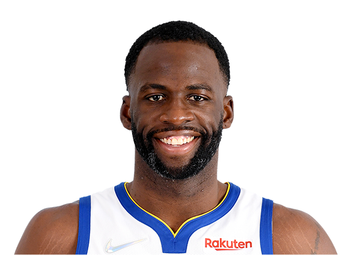
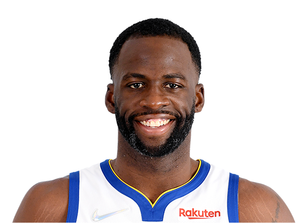

História do Time
Como se inventou
Os Warriors foram fundados em 1946 como o Philadelphia Warriors, um membro fundador da Basketball Association of America.
Liderados pela sensação inicial de pontuação Joe Fulks, a equipe venceu o campeonato na temporada inaugural da liga 1946-1947, derrotando o Chicago Stags, quatro jogos para um.


 
